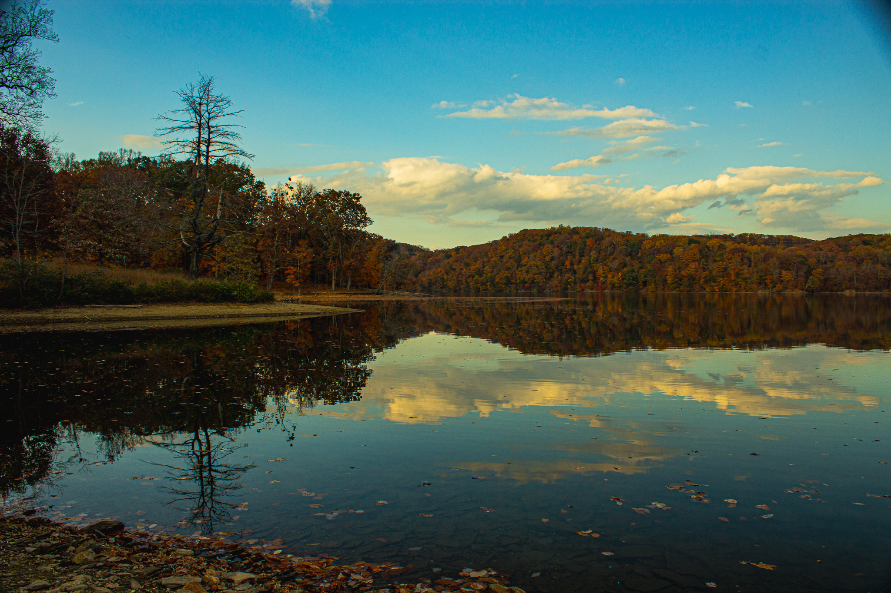

The .JPG Format
About This Image
This photograph shows a lake outside Whtie Marsh. The image was taken on 10/28/23 by my brother using his Canon camera.
Why JPG Format?
JPG format works perfectly for this photograph because it contains thousands of colors with smooth gradients. The JPG compression handles the subtle color transitions in the sky efficiently while keeping the file size small. JPG contains many compression levels which makes it perfect for photographers.
Image source: Original photo by Josh Eney
Image source: Website Name